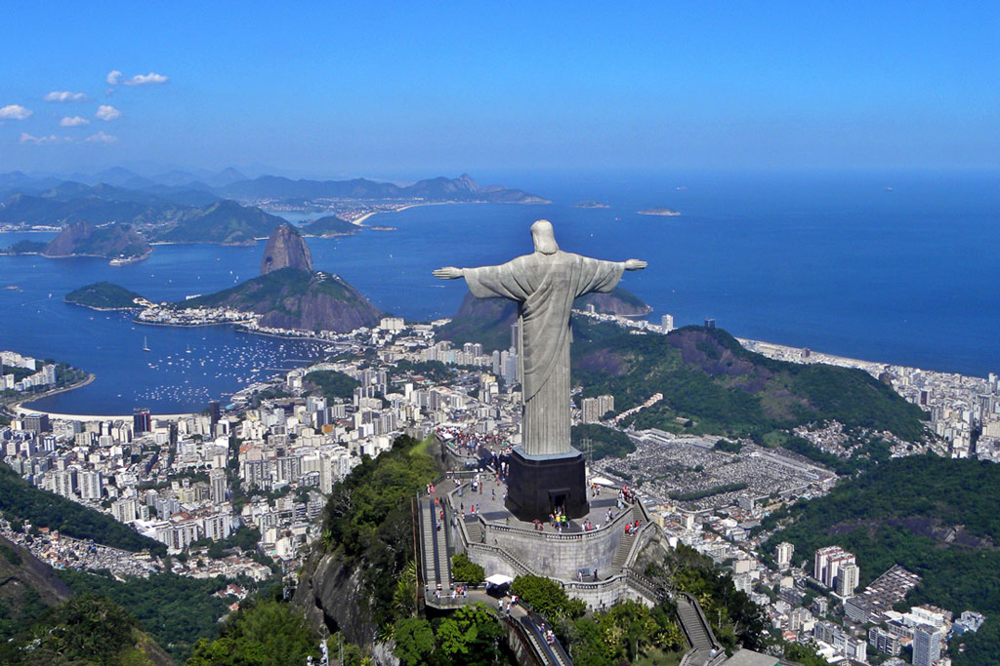
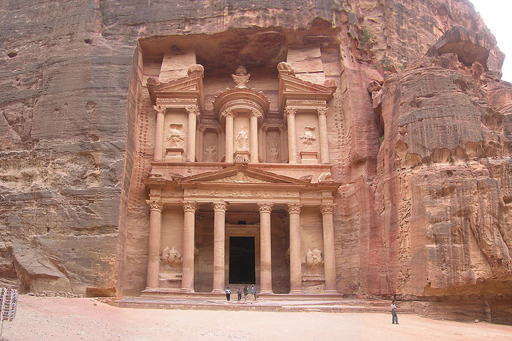

-

1-Chichen Itzá
La legendaria ciudad Maya
ubicada en el sur de México.
-

2-El Cristo Redentor
Situada en la cima del cerro de
Corcovado hacia Río de Janeiro
en Brasil.
-

3-Machu Picchu
Ubicado entre las montañas
Huayna Picchu y Machu Picchu
en Perú.
-

4-El Coliseo Romano
Construido en el siglo I D.C,
en el centro de Roma, Italia.
-

5-El Taj Mahal
Situado en Agra una ciudad
de Uttar Pradesh, en la India.
-
6-La Muralla China
Construida en el siglo 4 a.C.
y reconstruida en el siglo 16.
-

7-La ciudad de Petra
Construida en el siglo
7 a.C. en Jordania.